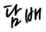

"높은 결근율·비효율적 작업규칙이 초과근무수당 원인" 미국 뉴욕시 위생국 소속 환경미화원들이 신종 코로나바이러스 감염증(코로나19) 이후 초과근무가 늘어나면서 최대 3억5000만원이 넘는 연봉을 수령한 사실이 알려졌다.12일(현지시간) 뉴욕포스트는 미국 뉴욕시 소속 환경미화원들과 감독관 94명이 초과근무수당으로 10만달러(약 1억1780만원)가 넘는 돈을 수령했다고 보도했다. 코로나19 발병 이전인 2019-2020년의 경우, 10만 달러 이상을 받은 사례는 2명인 것으로 나타났다.지난 2000년 환경미화원으로 입사해 관리자급 업무를 담당하는 크리스토퍼 타마스는 지난해 초과근무수당 17만883달러(약 2억130만원)을 받아 총 29만9160달러(약 3억5200만원)을 수령했다.그러나 고액 연봉에도 불구하고 미국 환경미화원들은 인력 부족으로 인한 과로를 호소하고 있는 것으로 전해졌다.뉴욕시 위생국의 조슈아 굿맨은 "한때 부서원 25%가 코로나19 양성판정을 받거나 자가격리조치에 들어갔다. 미화 서비스를 유지하기 위해선 일 년 내내 12시간씩 교대로 일한 미화원들에게 초과근무를 시킬 수밖에 없었다"고 밝혔다.그러면서 "직원이 적어도 작업량이 변하지는 않는다"며 "뉴요커들에게 깨끗하고 안전한 거리를 제공하기 위해 항상 열심히 일해왔다"고 덧붙였다. 한편 피터 워렌 공공정책센터 연구이사는 코로나19가 뉴욕시 위생국의 노동비효율성을 드러낸 것이라고 지적했다. 그는 "만성적으로 높은 결근율과 비효율적인 노조 노동규칙은 오랫동안 위생부서의 과도한 초과근무수당 수준에 기여해 왔다"고 말했다.